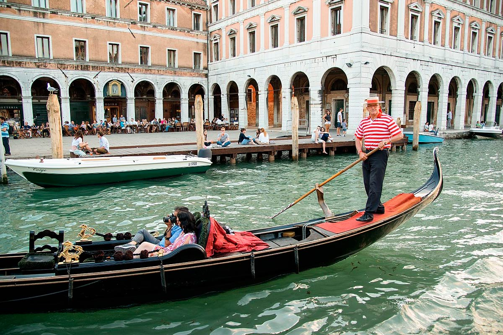

Las góndolas venecianas
Las góndolas representan el icono más característico de Venecia y, aunque un viaje en ellas suele ser muy costoso, la mayoría de los turistas disfrutan de esta experiencia. A continuación te ofrecemos toda la información que necesitas para contratar tu paseo en góndola por Venecia.